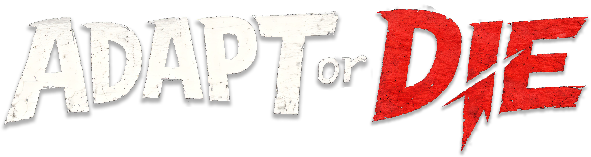

Devlogs
Build notes, small wins, weird fixes, system changes, and the occasional public confession.
SORRY. GAMES / WEIRD LITTLE GAMES / SORRYGAMES.COM
Sorry. Games makes strange little games with teeth, heart, and systems that bite back.
Our first game, Adapt or Die, is about surviving the food chain by evolving a sad little creature into something the world probably should have stopped earlier.
Follow the build while it is still messy, alive, and making suspicious noises in the corner.
ABOUT
Sorry. Games is an independent studio making weird little games with teeth.
We like atmosphere, strange systems, memorable choices, and games that feel handmade instead of focus-grouped into oatmeal.
The goal is simple: make games that are fun to play, fun to follow, and specific enough to leave a mark.
Fewer layers. Faster decisions. Better weird ideas surviving the meeting.
Devlogs, screenshots, playtests, and visible progress while the thing is still growing teeth.
Odd ideas, clean execution, no random nonsense. The nonsense has to earn its chair.
FEATURED PROJECT

A roguelike deckbuilder about pressure, hunger, mutation, and climbing the food chain one questionable body part at a time.

COMMUNITY / DISCORD
That is where the updates land, the screenshots show up, the roadmap shifts, and the useful feedback lives. It is also where you can lurk quietly and still know what is going on, which is honestly a feature.
Enter the DiscordBuild notes, small wins, weird fixes, system changes, and the occasional public confession.
Rough footage, in-progress moments, visual experiments, and proof the creature has not escaped yet.
Shared direction, idea threads, playtest calls, bug reports, and sharp feedback that helps the game survive contact with humans.
CONTENT GRID
Devlogs, screenshots, playtests, bug reports, roadmap notes, and other evidence that the game is becoming alive despite our best efforts.
Devlog
Progress posts, patch notes, monthly recaps, useful mistakes, and tiny victories with suspicious confidence.
Read the latest entryScreenshots + Clips
Roadmap
Ideas + Feedback
Thoughts, suggestions, useful criticism, and suspiciously good weird ideas all have a place here.
Submit feedbackPlaytest Signups
Join upcoming tests and get access while the game is still evolving in public, before it learns to behave.
Register interestBug Reports
Report bugs, weird behaviour, suspicious breakage, and anything that looks like the game chewing through the drywall.
Report a bug